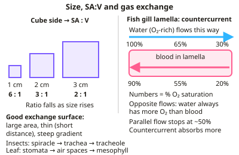

A-level Biology Year 12 · Topic 3
Organisms exchange substances with their environment
This topic is about how organisms exchange substances with their environment, from a single cell to a whole tree.
We will see why large organisms need special exchange surfaces in insects, fish, leaves and human lungs, and how food is digested and absorbed.
Then we cover mass transport: haemoglobin and the blood, the heart and its control, transport in plants, and the diseases that affect the heart and lungs.
- 8 subtopics
- 370 questions
- Free: 3.1 notes and 10 questions
In this topic
- 3.1Surface area to volume ratio and gas exchangeFree below · 33 questions
- 3.2Digestion and absorptionOpen in Full Marks · 24 questions
- 3.3Mass transport in animalsOpen in Full Marks · 33 questions
- 3.4Mass transport in plantsOpen in Full Marks · 31 questions
- 3.5Control of the heartbeat: SAN, AVN, Purkyne tissue and ECG interpretationOpen in Full Marks · 71 questions
- 3.6Cardiovascular disease: risk factors, correlation and causationOpen in Full Marks · 35 questions
- 3.7Lung disease, risk factors and interpreting lung function dataOpen in Full Marks · 82 questions
- 3.8Blood, tissue fluid, lymph and blood clottingOpen in Full Marks · 61 questions
3.1 · Free notes
Surface area to volume ratio and gas exchange

Key points
- As organisms increase in size, their surface area to volume ratio decreases, so diffusion alone cannot supply the needs of larger, more active organisms — they need specialised exchange surfaces and transport systems.
- Efficient exchange surfaces have: a large surface area, being thin (short diffusion distance), and often a good blood supply or ventilation to maintain a steep concentration gradient.
- Insects exchange gases through spiracles leading to a network of tracheae and tracheoles, delivering oxygen directly to tissues; spiracles can close to reduce water loss.
- Fish use gills with many thin gill filaments covered in lamellae, increasing surface area. Countercurrent flow (water and blood flowing in opposite directions) maintains a concentration gradient along the whole gill, maximising oxygen uptake.
- Dicotyledonous plant leaves exchange gases through stomata, with air spaces in the spongy mesophyll providing a large internal surface area; a waxy cuticle reduces water loss.
In more detail
- Fick's law: rate of diffusion ∝ (surface area × difference in concentration) ÷ length of diffusion path.
- Countercurrent flow: blood and water flow in opposite directions over the lamellae, so blood always meets water with a higher oxygen concentration, keeping a gradient along the whole gill.
- Insect ventilation: abdominal muscles pump air in and out; at the end of tracheoles there is fluid that is drawn into muscle cells during activity, increasing the surface area for gas exchange.
- Balancing gas exchange and water loss: insects close spiracles and have a waxy cuticle; xerophytes have sunken stomata, hairs and rolled leaves.
Practice
Surface area to volume ratio and gas exchange: 10 questions
Pick an answer to check it, or open the answer for the explanation.
1. Why can't diffusion alone supply large organisms with enough oxygen?
- They have a large surface area to volume ratio
- They have a small surface area to volume ratio, so diffusion distance is too great relative to demand
- They don't need oxygen
- They have no cells
Show answer
B: They have a small surface area to volume ratio, so diffusion distance is too great relative to demand. As volume grows faster than surface area, exchange by diffusion becomes insufficient.
2. How do insects deliver oxygen to their tissues?
- Through blood only
- Directly via tracheae and tracheoles from spiracles
- Through the exoskeleton by osmosis
- Via gills
Show answer
B: Directly via tracheae and tracheoles from spiracles. Air moves through a network of tubes straight to respiring cells.
3. What is the advantage of countercurrent flow in fish gills?
- It saves energy only
- It maintains a concentration gradient along the whole gill, maximising oxygen absorbed
- It prevents water loss
- It increases blood pressure
Show answer
B: It maintains a concentration gradient along the whole gill, maximising oxygen absorbed. Blood is always meeting water with a higher oxygen concentration.
4. Which feature increases the internal surface area for gas exchange in a leaf?
- Waxy cuticle
- Air spaces in the spongy mesophyll
- Guard cells
- Xylem vessels
Show answer
B: Air spaces in the spongy mesophyll. These interconnected spaces let gases reach cells easily.
5. Why might insects close their spiracles?
- To increase oxygen uptake
- To reduce water loss
- To speed up respiration
- To let in more carbon dioxide
Show answer
B: To reduce water loss. This is a trade-off between gas exchange and water conservation.
6. Why do smaller organisms not need specialised gas exchange surfaces?
- They have a large surface area to volume ratio, so diffusion alone is sufficient
- They don't respire
- They are always aquatic
- They have no cells
Show answer
A: They have a large surface area to volume ratio, so diffusion alone is sufficient. Diffusion distance is short relative to their needs.
7. What is the function of tracheoles in an insect?
- Carry blood
- Deliver oxygen directly to respiring tissues
- Filter air
- Produce ATP
Show answer
B: Deliver oxygen directly to respiring tissues. They form the finest branches of the tracheal system.
8. A cube has sides of 2 cm. What is its surface area to volume ratio?
- 6 : 1
- 12 : 1
- 3 : 1
- 1.5 : 1
Show answer
C: 3 : 1. SA = 6 × 2² = 24 cm²; V = 2³ = 8 cm³; 24 ÷ 8 = 3, so 3 : 1. The ratio 6 : 1 belongs to a 1 cm cube.
9. A cubic cell doubles the length of each of its sides. What happens to its surface area to volume ratio?
- It halves
- It doubles
- It stays the same
- It falls to a quarter
Show answer
A: It halves. Surface area increases 4× but volume increases 8×, so the ratio halves (e.g. 6 : 1 for a 1 cm cube becomes 3 : 1 for a 2 cm cube).
10. Why do flying insects often pump their abdomens during flight?
- To open and close the stomata
- To ventilate tracheae and keep a steep O₂ gradient
- To pump haemolymph carrying O₂ to muscles
- To force oxygen through the cuticle
Show answer
B: To ventilate tracheae and keep a steep O₂ gradient. Abdominal pumping moves air in and out of the tracheae, speeding O₂ supply to flight muscles. Insect blood does not carry O₂, and insects have spiracles, not stomata.
Keep going in Full Marks
Full Marks has 33 questions on Surface area to volume ratio and gas exchange (23 more than here), set out in practice levels. You also get notes and 3D models for all 8 subtopics of Organisms exchange substances with their environment, plus games, timed exams and past papers.
On your exam board
- AQATopic 3: Organisms exchange substances with their environment
- OCR ATopic 3.1.1: Exchange surfaces, Topic 3.1.2: Transport in animals, Topic 3.1.3: Transport in plants
- OCR BTopic 2.3: Transport and gas exchange
- EdexcelTopic 4: Exchange and transport
- CambridgeTopic 7: Transport in plants, Topic 8: Transport in mammals, Topic 9: Gas exchange